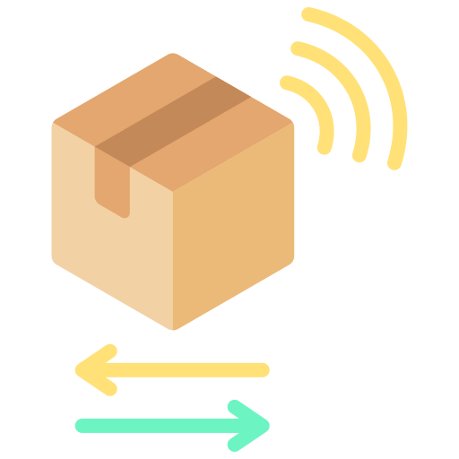

<!DOCTYPE html>

<html>
<head>
<meta charset="utf-8"/>
<meta content="width=device-width, initial-scale=1.0" name="viewport"/>
<meta content="ie=edge" http-equiv="X-UA-Compatible"/>
<title>DPI</title>
<style>
        * {
            margin: 0;
            padding: 0;
        }

        #mindmap {
            display: block;
            width: 100vw;
            height: 100vh;
        }
    </style>
<link href="https://cdn.jsdelivr.net/npm/markmap-toolbar@0.15.4/dist/style.css" rel="stylesheet"/>
<link href="https://cdn.jsdelivr.net/npm/katex@0.16.8/dist/katex.min.css" rel="stylesheet"/>
<link href="https://cdn.jsdelivr.net/npm/@highlightjs/cdn-assets@11.8.0/styles/default.min.css" rel="stylesheet"/>
</head>
<body>
<svg id="mindmap"></svg>
<script src="https://cdn.jsdelivr.net/npm/d3@7.8.5/dist/d3.min.js"></script>
<script src="https://cdn.jsdelivr.net/npm/markmap-view@0.15.4/dist/browser/index.js"></script>
<script src="https://cdn.jsdelivr.net/npm/markmap-toolbar@0.15.4/dist/index.js"></script>
<script>(e => {
    window.WebFontConfig = {
        custom: {families: ["KaTeX_AMS", "KaTeX_Caligraphic:n4,n7", "KaTeX_Fraktur:n4,n7", "KaTeX_Main:n4,n7,i4,i7", "KaTeX_Math:i4,i7", "KaTeX_Script", "KaTeX_SansSerif:n4,n7,i4", "KaTeX_Size1", "KaTeX_Size2", "KaTeX_Size3", "KaTeX_Size4", "KaTeX_Typewriter"]},
        active: () => {
            e().refreshHook.call()
        }
    }
})(() => window.markmap)</script>
<script defer="" src="https://cdn.jsdelivr.net/npm/webfontloader@1.6.28/webfontloader.js"></script>
<script>(() => {
    setTimeout(() => {
        const {markmap: M, mm: ge} = window, me = new M.Toolbar;
        me.attach(ge);
        const fe = me.render();
        fe.setAttribute("style", "position:absolute;bottom:20px;right:20px"), document.body.append(fe)
    })
})()</script>
<script>
    ((F, I, R, H) => {
        const X = F();
        window.mm = X.Markmap.create("svg#mindmap", (I || X.deriveOptions)(H), R)
    })(() => window.markmap, null, {'content': "<div style='display: flex; justify-content: center; align-items: center;'></div> <div style='padding-bottom: 5px; text-align: center;'><font color='teal'><h3>DPI 方法</h3></font></div>", 'depth': 1, 'children': [{'content': '<h4>基于端口</h4>', 'depth': 2}, {'content': '<h4>协议编码</h4>', 'depth': 2}, {'content': '<h4>模式匹配</h4>', 'depth': 2, 'children': [{'content': '字符串匹配', 'depth': 3, 'children': [{'content': '基于启发式', 'depth': 4}, {'content': '基于哈希', 'depth': 4}, {'content': '基于过滤', 'depth': 4}, {'content': '基于自动机', 'depth': 4}, {'content': '其它', 'depth': 4}]}, {'content': '正则表达匹配', 'depth': 3, 'children': [{'content': '基于过滤', 'depth': 4}, {'content': '基于自动机', 'depth': 4}]}]}, {'content': '<h4>统计分析</h4>', 'depth': 2}]},
        {"colorFreezeLevel": 2, "initialExpandLevel": 3}
    )
</script>
</body>
</html>